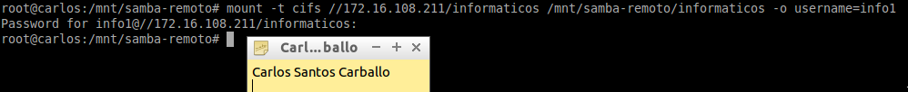

- Módulo: Sistemas Operativos
- Título del trabajo Samba
- Componentes del grupo: Carlos Santos Carballo
- Curso Académico: 2014/2015
- Fecha de entrega: 13 de Marzo de 2015
Nuestro servidor será un Debian 7. En el configuraremos nuestra interfaz de red en el servidor.
Modificamos el fichero "/etc/hostname" para cambiar el nombre de la máquina.
A continuaciónintalamos ssh server.
Una vez hecho esto, debemos crear los siguientes grupos y usuarios.
Grupo informaticos con info1, info2 y supersamba.
Grupo panaderos con pan1 y pan2 y supersamba.
Crear el usuario smbguest.

Para asegurarnos que nadie puede usar smbguest para entrar en nuestra máquina mediante login, modificamos el fichero "/etc/passwd" de la siguiente manera.
A continuación creamos el grupo usuariosamba, y dentro de este ponemos a todos los panaderos, informaticos, supersamba y a smbguest
Vamos a instalar el servidor samba en nuestro equipo

Vamos a renombrar el fichero de configuración existente, y trabajaremos a partir de un fichero de configuración nuevo vacío: "mv /etc/samba/smb.conf /etc/samba/smb.conf.000".
Creamos un fichero vacío "/etc/samba/smb.conf", y lo rellenamos con el contenido siguiente.
Vamos a crear las carpetas de los recursos compartidos con los permisos siguientes
/var/samba/public: Usuario propietario "supersamba", grupo propietario "usuariosamba". Poner permisos 770.
/var/samba/panaderos: Usuario propietario "supersamba", grupo propietario "panaderos". Poner permisos 770.
/var/samba/informaticos: Usuario propietario "supersamba", grupo propietario "informaticos". Poner permisos 770.
Añadimos los usuarios creado a Samba.
Comprobamos nuestra lista de usuarios Samba.
Reiniciamos el servicio para que se lean los cambios.
Verificamos la sintaxis del fichero de configuración del servidor Samba.
Vemos que el servicio SMB/CIF está a la escucha.

Comprobamos los accesos de todas las formas posibles. Como si fuéramos un panadero, un informático y un invitado
Para comprobar resultados, desde el servidor Samba ejecutamos.
En nuestro cliente instalamos "smb4k" para poder ver si podemos acceder a los recursos compartidos.
Una vez instalamos el paquete lo abrimos e intentamos acceder a algún recurso compartido.
Desde este equipo usaremos comandos para acceder a la carpeta compartida. Primero comprobar el uso de las siguientes herramientas.
Con el usuario root, usamos el siguiente comando para montar un recurso compartido de Samba Server, como si fuera una carpeta más de nuestro sistema.

Ejecutar el comando "df -hT". Vemos que todos se han montado correctamente.
Volvemos a ejecutar "smbstatus" y "netstat -ntap".
Para desmontar el recurso remoto usamos el comando "umount".
Para finalizar debemos realizar el montaje automatico, para ellos añadiremos las siguientes lineas en el fichero "/etc/fstab".
Reiniciamos y comprobamos los resultados.